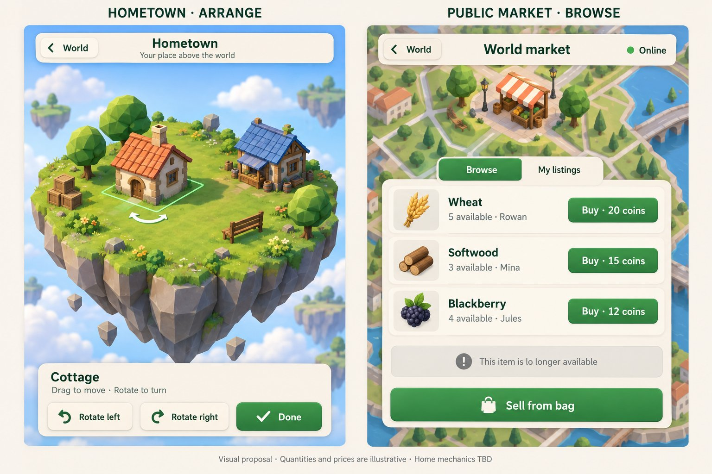
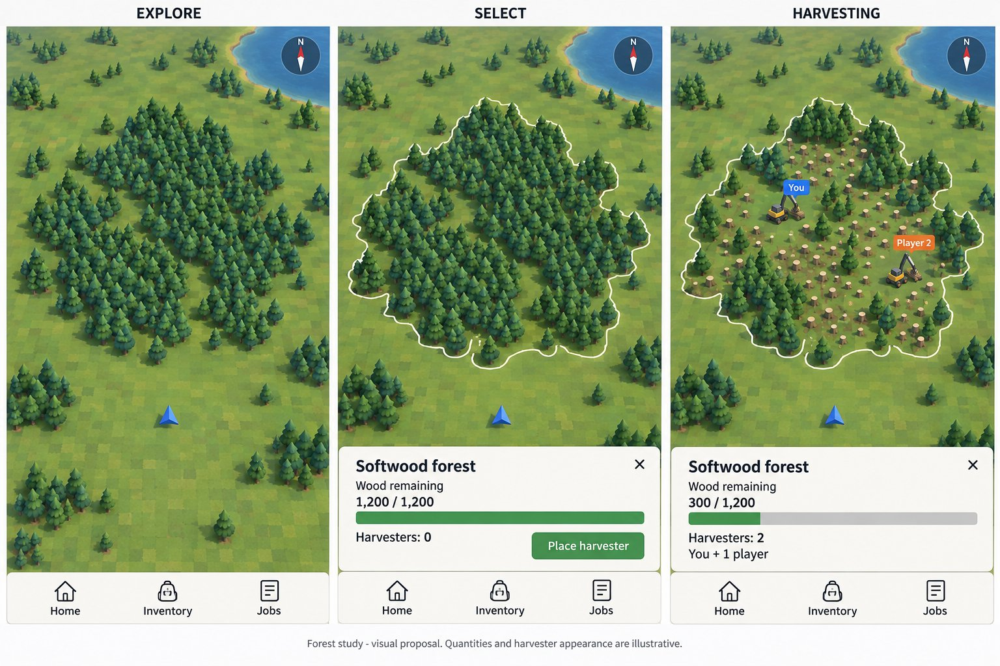

First board: Home and the public market
A floating island where a cottage can be moved and turned, beside a market list. The layout was set aside as impractical.

Hometown arrange, and Public market browse. The grey notice reads "lo longer available", a slip by the image generator.
Second board: the forest on the map
The map in three states: explore, select a whole forest by its outline, and harvest. The look of the map and the whole-patch outline carried on; the depleting forest was later replaced by timed work.

Explore, Select and Harvesting. "You" and "Player 2" are two players sharing one forest.